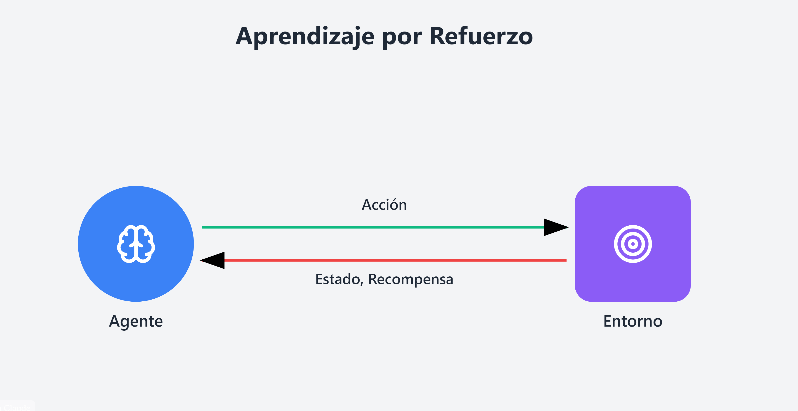

El aprendizaje por refuerzo es una técnica de inteligencia artificial en la que un agente aprende a tomar decisiones interactuando con un entorno. Recibe recompensas cuando realiza acciones favorables y puede recibir penalizaciones cuando sus acciones producen resultados negativos.
Mediante la experiencia, el agente aprende qué acciones le ayudan a conseguir mejores resultados y busca maximizar las recompensas a largo plazo.
Es el sistema que aprende y toma decisiones. Por ejemplo, un robot que aprende a desplazarse.
Es el lugar o sistema con el que interactúa el agente. Puede ser un videojuego, una fábrica o un entorno virtual.
Es una decisión o movimiento que realiza el agente. Por ejemplo, avanzar, girar o elegir una ruta.
Es una señal que indica qué tan favorable fue el resultado de una acción. Una recompensa positiva favorece determinados comportamientos, mientras que una recompensa negativa puede desalentarlos.
Los robots pueden aprender a desplazarse, manipular objetos o realizar tareas mediante la práctica y la evaluación de sus acciones.
Un sistema de inteligencia artificial puede aprender estrategias para superar niveles, evitar obstáculos y conseguir una mayor puntuación.
Se puede utilizar para buscar mejores estrategias en la distribución de recursos, la organización de procesos y la planificación de rutas.
| Componente | Función |
| Agente | Aprende y toma decisiones. |
| Entorno | Es el medio con el que interactúa el agente. |
| Acción | Es la decisión o movimiento que realiza el agente. |
| Recompensa | Indica el resultado favorable o desfavorable de una acción. |